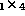
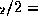

最後の仕上げである。前段から吐かれた配置に付いて行同士、列同士の入れ 換えを行い得点アップを図る。この入れ換えでは、各行や列の得点は変わらな いので評価用の得点計算は斜めのみで良い。
まず行のみの入れ換えで左上から右下方向の斜めの役の得点アップを図る。 この行のみの 5!=120 回の入れ換えでこの斜めの役だけを見れば、最高の得 点を出す組合せが得られる。(行同士、列同士の入れ換えしか行わない場合)
さらに、この役を壊さないように右上から左下方向の役の得点を最高にする。 この組合せは C

C
15通りである。理想的には 120 x 15 = 1800 回の評価を行うのが良いが、これでは時間 がかかるので第一段の120の組合せのうち得点が最高になるものを一つ選びそ の一つに付いてのみ第二段15通りの組合せを評価することにした。